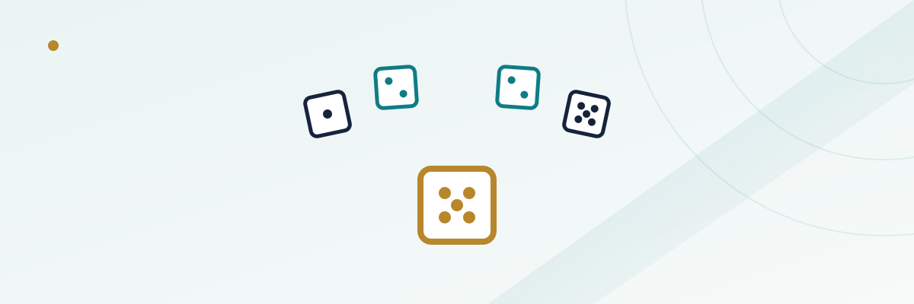

Horn Bets and Any Craps: Why These One-Roll Bets Cost So Much

Walk up to almost any craps table and you'll hear someone call out "horn high yo" or toss a few chips to the stickman and say "any craps for the boys." These are one-roll bets, resolved on the very next throw of the dice, and they carry an energy the pass line doesn't — quick, loud, over in five seconds either way. What that energy obscures is the math underneath. Horn bets and Any Craps are consistently among the worst-value wagers on the entire layout, and the reason has less to do with bad luck than with how the payout odds are rounded against the real probabilities.
In this guide
What Any Craps actually is
Any Craps is a single-roll proposition bet sitting in the middle of the layout: it wins if the next roll is 2, 3, or 12, and loses on anything else. It pays 7 to 1. There are 36 possible combinations of two dice, and exactly four of them produce a 2, 3, or 12 — one way to make 2 (1-1), two ways to make 3 (1-2, 2-1), and one way to make 12 (6-6). That's 4 winning combinations out of 36, or a true probability of 1 in 9.
A bet that wins 1 time in 9 should, to be mathematically even, pay 8 to 1 — you'd need to win $8 for every $1 you lose across nine average rolls just to break even. Any Craps pays 7 to 1 instead. Run the expected value on a $5 bet: you lose $5 on 32 of every 36 rolls and win $35 on 4 of them. That's (32 × -$5 + 4 × $35) / 36 = (-$160 + $140) / 36 = -$20/36, or about -$0.56 per bet, which works out to a house edge of 11.1%. For comparison, a pass line bet with odds runs well under 1.5%, and even a hardway on the 6 or 8 — one of the worse regular bets on the table, as our hardways guide covers — sits around 9.1%. Any Craps is worse than that.
The horn bet: four numbers, one roll
The horn bet takes the idea further by combining four single-roll numbers — 2, 3, 11, and 12 — into one wager, split evenly across all four. A $4 horn bet is really four $1 bets stacked together: $1 each on 2, 3, 11, and 12. If any one of those four numbers rolls, that portion wins at its own payout and the other three portions lose. The payouts aren't uniform, because the numbers aren't equally likely:
| Number | Ways to roll it (out of 36) | Horn-bet payout | True odds |
|---|---|---|---|
| 2 | 1 (1-1) | 30 to 1 | 35 to 1 |
| 3 | 2 (1-2, 2-1) | 15 to 1 | 17 to 1 |
| 11 | 2 (5-6, 6-5) | 15 to 1 | 17 to 1 |
| 12 | 1 (6-6) | 30 to 1 | 35 to 1 |
Notice the gap between the payout and the true odds on every single number. Rolling a 2 is a true 35-to-1 shot, yet the horn bet only pays 30 to 1 on that quarter of your wager. Rolling a 3 is a true 17-to-1 shot, paid at 15 to 1. That gap — five units short on the hardest numbers, two units short on the easier ones — is where the house edge lives, and it adds up to roughly 12.5% on the horn bet as a whole, slightly worse than Any Craps on its own.
Why the payouts look generous but aren't
30 to 1 and 15 to 1 sound enormous next to a pass line bet's roughly even-money payout, and that's exactly the psychological hook. A small bet with a big multiplier feels like a lottery ticket rather than a grind, and craps tables lean into that framing — the stickman calls these bets out loud, the chips get tossed in with some flourish, and a hit pays out fast and visibly. None of that changes the math. The size of a payout tells you nothing about its value relative to the actual odds; what matters is the gap between the two, and on horn bets and Any Craps that gap is unusually wide compared to almost everything else on the table.
It helps to think of it the way you'd think about a single-number bet at roulette: a true 1-in-37 shot (on a European wheel) paying 35 to 1 still carries a real edge, just a much smaller one than a 1-in-9 shot paying 7 to 1. The size of the number isn't what determines the edge — the size of the shortfall between the payout and the true odds is.
Horn High and the C&E bet
Two close relatives show up at most tables. A "Horn High" bet — "horn high yo" or "horn high aces" — is the standard horn bet with extra weight loaded onto one number, usually 11 (the "yo") or 2 (the "aces"). A $5 horn-high-yo bet, for instance, typically splits as $1 each on 2, 3, and 12, with the remaining $2 on 11, paying out more if the favored number hits. It doesn't change the underlying math meaningfully — the edge stays in roughly the same range, just shifted slightly depending on which number carries the extra weight.
The Craps and Eleven bet, almost always shortened to "C&E," is a simpler two-way cousin: half the bet rides on Any Craps (2, 3, or 12) and half rides on 11, with each half paying its own odds. It carries a house edge in a similar neighborhood, generally cited around 11% depending on how a specific casino rounds the payout, which puts it in the same tier as Any Craps and the horn bet rather than meaningfully better or worse.
How this compares to other one-roll and proposition bets
Not every proposition bet at the table is this bad, which is part of why it's worth knowing where horn bets and Any Craps actually rank. The field bet — a one-roll wager on 2, 3, 4, 9, 10, 11, or 12 — usually runs a house edge around 2.7% to 5.5% depending on how the casino pays 2 and 12, far better than the horn despite covering a similar idea (betting on a cluster of numbers to hit on the next roll). The core pass line and don't pass bets sit under 1.5%. Hardways, as covered in our dedicated guide, run from roughly 9.1% to 11.1% depending on the number. Horn bets, Any Craps, and C&E cluster at the very bottom of that list, in the 11% to 12.5% range, alongside bets like the Big 6 and Big 8 that our Big 6/Big 8 guide covers.
| Bet | Approximate house edge |
|---|---|
| Pass line (no odds) | ~1.41% |
| Field bet (standard payouts) | ~5.5% |
| Place bet on 6 or 8 | ~1.52% |
| Hardway on 6 or 8 | ~9.1% |
| Any Craps | ~11.1% |
| C&E | ~11% |
| Horn bet (full) | ~12.5% |
Why dealers love when you bet these
None of this means horn bets and Any Craps are rigged or dishonest — the payouts and odds are posted, and the math is public. It just means these bets exist for reasons that have nothing to do with being a good value play. They're fast, loud, and social, they let a player with a small bankroll get a shot at a big-looking number, and they add action to a table during a stretch where the pass line and place bets might otherwise go quiet between come-out rolls. Dealers and stickmen often encourage them, not out of malice, but because they genuinely do liven up a table — a $5 horn bet that hits for a few hundred dollars is a memorable moment, and casinos are generally fine with memorable moments that happen to carry a double-digit house edge.
Where this fits in an actual session
The practical takeaway isn't that you can never make these bets — it's that they belong in the "entertainment" bucket of a session, not the "grinding out value" bucket, the same way our casino bankroll guide draws that line for other high-variance side action. A small horn bet thrown in between pass-line rolls, purely for the thrill of a big number hitting, is a reasonable use of a few dollars if that's genuinely what you want from the session. Treating it as a repeatable edge, or sizing it up the way you'd size a place bet on 6 or 8, is where the math starts working against you a lot faster than most players expect. If the goal is to make the bankroll last and play the odds that are actually close to fair, the pass line, come bets, and place bets on 6 and 8 remain the backbone of the table — horn bets and Any Craps are the fireworks, not the foundation.
Frequently asked questions
What's the house edge on a horn bet in craps?
Roughly 12.5% on the bet as a whole, since the 30-to-1 and 15-to-1 payouts on 2, 3, 11, and 12 all fall short of the true odds of 35 to 1 and 17 to 1.
Is Any Craps the same thing as a horn bet?
No. Any Craps covers only 2, 3, and 12 at a single 7-to-1 payout. A horn bet splits your wager across those same three numbers plus 11, each paying its own separate odds.
Why do horn bets pay less than the true odds?
Casinos round payouts down to numbers that are easy to pay out at the table — 30 to 1 instead of 35 to 1, 15 to 1 instead of 17 to 1 — and that rounding is exactly where the house edge comes from.
Is a C&E bet better than a horn bet?
They're close. C&E generally runs around 11%, slightly better than the full horn bet's roughly 12.5%, but both sit well above the edge on pass line, come, or place bets.
Are one-roll bets ever a good idea at craps?
They're fine as a small, occasional add-on for the excitement of a fast, big-looking payout, but they're not a sound way to build a session strategy — the core pass line, come, and place bets carry a far smaller edge over time.